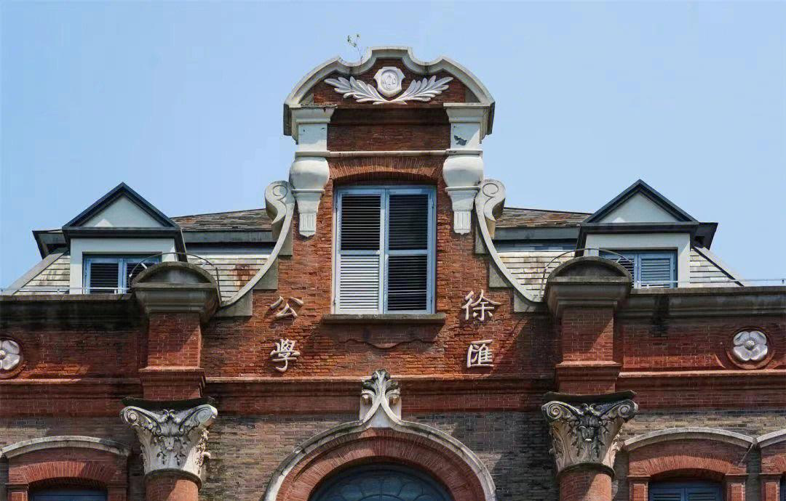

THE PAST, IN THE PRESENT
中国近现代历史 · 数字微展览
时代留痕在物件中，
与历史相遇。
一面队旗，一页文稿，一座校舍。
沿着七组历史素材留下的线索，
读懂时代变迁中的选择、抗争与守护。

由物入史 · 以史观今SCROLL TO EXPLORE ↓
CURATOR’S NOTE / 策展导言
历史不只在书页上。它也藏在校舍的砖墙里、铁路的延伸中，以及被郑重保存的一纸一物之间。本展以近代教育、交通与社会、革命与守护三条线索，将不同形式的历史材料并置阅读。
01 / THE COLLECTION
循物见史
让每一件展品，讲述自己的时代。
没有找到相关展品，请尝试其他关键词或主题。
02 / HISTORICAL COORDINATES
把物件，放回时代
这里的时间，标注的是事件或材料的历史坐标。
时间线中的事件年代、建筑年代与文献版本年代含义不同；具体说明见各展品详情。徐州铁路专题涉及清末以来的长期变迁。
03 / LOOK CLOSER
看见展品之后，
再多问一个问题。
这是什么类型的历史材料？
它留下了谁的声音？
还有哪些故事，需要其他史料来补充？